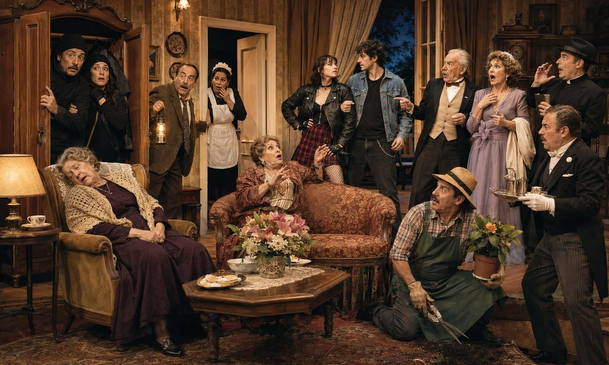
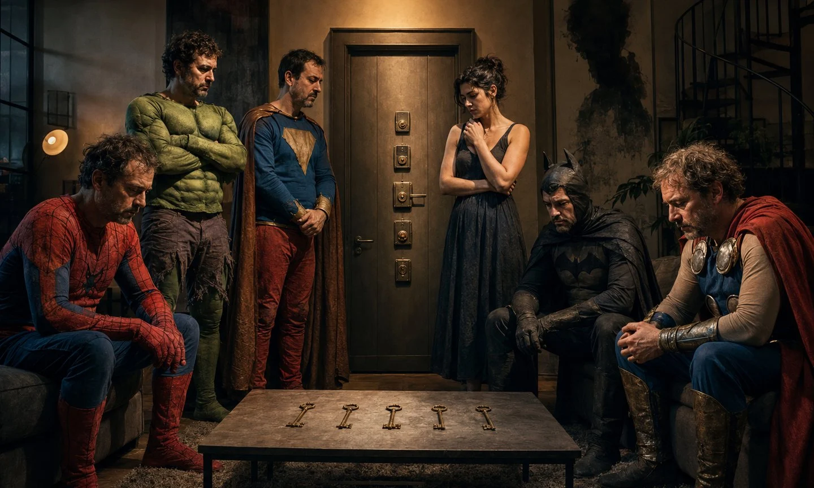

La chica en la lluvia
Una tormenta de verano convierte una espera tediosa en una revelación sobre la juventud, la libertad y las personas que alguna vez fuimos.
DRAMATURGIA · RELATOS · HISTORIAS
Relatos para leer. Obras para imaginar. Teatro para llevar a escena.
Una biblioteca de historias donde lo cotidiano se vuelve raro, lo absurdo se vuelve posible y cada personaje esconde algo demasiado humano.
CATÁLOGO
RELATOS BREVES
Relatos sobre la infancia, los vínculos, el humor, las pérdidas y esas escenas que siguen viviendo en la memoria.
Una tormenta de verano convierte una espera tediosa en una revelación sobre la juventud, la libertad y las personas que alguna vez fuimos.

Un viaje de rugby a Londres se convierte en una señal decisiva sobre el teatro, la vocación y la necesidad de no soltar las pasiones.

Un choque menor en la Buenos Aires de los noventa escala hasta convertirse en una pelea callejera tan violenta como absurda.

Una carpa de Punta Mogotes guarda los veranos, los afectos y las pequeñas aventuras de una familia que ya vive en la memoria.

Un equipo de amigos acostumbrado a quedar fuera de la foto desafía a los favoritos en un torneo de exalumnos.

En el momento más incómodo de la adolescencia, una conversación junto a una pileta puede cambiar la forma de mirarse para siempre.

Un cumpleaños reúne en una quinta a dos mundos distintos y convierte un partido de fútbol en una lección sobre amistad y generosidad.

Dos adolescentes porteños descubren en un pequeño pueblo una amistad, una noche de libertad y un mundo que nunca olvidarán.

Un viaje de caza pensado para “hacer hombre” a un niño termina cuestionando qué significa realmente crecer.

La última Navidad de una familia unida queda suspendida entre un juguete roto, el silencio de los grillos y una figura en la luna.

El logro de una alumna despierta el recuerdo de una maestra, un muñeco imperfecto y el abrazo que cambió una mirada.

Una emergencia en plena calle reúne primeros auxilios, tensión y una docena de empanadas gigantes en una escena imposible de sostener con seriedad.

Cuando un viaje de egresados parece terminar sin problemas, una frase demasiado optimista recuerda por qué nunca conviene festejar antes de tiempo.

Durante la búsqueda de su padre, una consulta desesperada revela una historia familiar silenciada y una inesperada forma de despedida.

Los minutos previos a una función reúnen nervios, maquillaje y generaciones de alumnos que encontraron algo propio sobre un escenario.

Una frase pronunciada en un funeral obliga a elegir entre continuar un camino que enferma o animarse a vivir otra vida.

Enseñar también significa acompañar, despedirse cada año y aceptar que, a veces, los alumnos sostienen a quien debería guiarlos.

La desaparición de su padre obliga a un hijo a ocupar el centro de una historia que nunca quiso protagonizar.

Una gira de rugby y una casa de familia demasiado fría enseñan que la hospitalidad puede aparecer donde menos se espera.

El recuerdo de un primer beso se convierte en una metáfora sobre todos los miedos que hay que atravesar para animarse a sentir.

Cuando alguien desaparece sin explicar nada, el silencio deja de ser vacío y se llena de preguntas, fantasmas y versiones imposibles.

Entre cuerpos, formol y pasillos oscuros, un estudiante de medicina encuentra una presencia capaz de cambiarle la vida.

Un hombre viaja cada año hacia el lugar donde cree que encontrará a la mujer que ama, aunque nadie más recuerde que haya existido.

Una audición escolar inesperada abre la puerta a un escenario, una comunidad y una vocación que nunca dejará de regresar.
TEATRO BREVE
Estudio escénico de una especie impredecible.
DESTACADA
Una comedia de realismo mágico compuesta por siete obras cortas que desnudan lo locos y raros que podemos ser los seres humanos.
OBRAS DE TEATRO
Dos obras para llevar a escena, atravesadas por el humor, los vínculos, los secretos y aquello que las personas intentan ocultar.

COMEDIA DE ENREDOS · 14 PERSONAJES
Una casa de campo, varias escapadas secretas y demasiadas personas convencidas de que tendrán el lugar para sí solas. Entre ladrones, familiares y una celebración inesperada, el fin de semana se convierte en un caos imposible de ocultar.

COMEDIA DRAMÁTICA · 6 PERSONAJES
Cinco amigos de la adolescencia se reúnen después de años para una inesperada fiesta de despedida. Lo que parece un reencuentro absurdo pronto se convierte en un juego que los obliga a enfrentar secretos, pérdidas y viejas lealtades.
DERECHOS DE REPRESENTACIÓN
La compra de un texto permite su lectura personal. La representación pública requiere autorización específica.
Revisá la sinopsis, duración, elenco y necesidades de producción.
Compañía, ciudad, sala, cantidad de funciones y fechas tentativas.
Te responderemos con disponibilidad, autorización y condiciones de representación.
CONTACTO